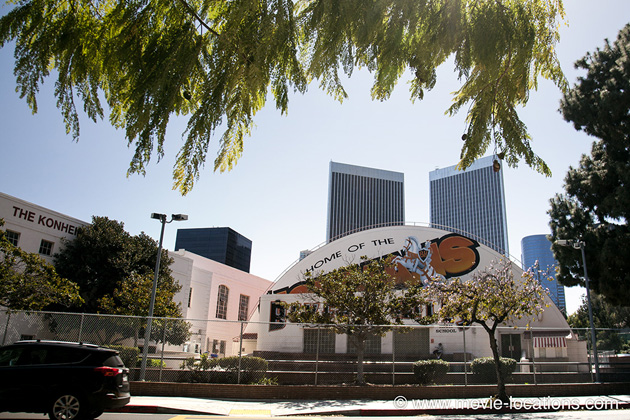
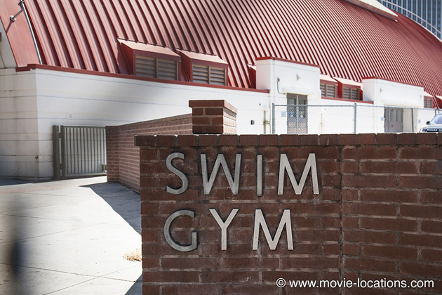

It's A Wonderful Life
Main Content

It’s hard now to believe that this Christmas classic was a box office failure on its first release.
And the sad news is that there is no ‘Bedford Falls’ to visit. The town, where elderly angel Clarence (Henry Travers) convinces suicidal George Bailey (James Stewart) that life hasn't been in vain, was totally recreated with a huge three-block-long set on RKO's Encino Ranch in the San Fernando Valley. You can’t even visit the studio – it’s long gone. It’s been replaced by housing, west of the Sepulveda Basin Recreation Area, between Oxnard Street and Burbank Boulevard.

One location exists, though you probably won’t get the chance to see it. The gym floor which opens up to reveal a swimming pool is still in action at Beverly Hills High School, 255 South Lasky Drive, at Moreno Drive in Beverly Hills, where the 'Swim-Gym' is still signposted.
Visit Info
Visit The Film Locations
California | Los Angeles
Visit: Los Angeles
Flights: Los Angeles International Airport (LAX), 1 World Way, Los Angeles, CA 90045 (tel: 424.646.5252)
Travelling around: Los Angeles Metro